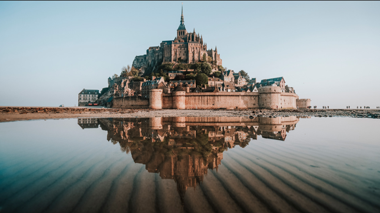

About France
Located in Western Europe, the historic country has started to become an increasingly bigger tourist
attractions with its beautiful architecture that is, much like the other countries in Europe, super old
dating back to Medieval Times, as well as the beautiful culture that surrounds you wherever you go. Known for it's
long history of famous monarchs that were either good or bad, and the numerous wars that have been tied with
France, the country is rich with history anywhere you go. Whether you're a history guru though, or just
someone who likes to try new places, this country has so much to offer for you and your family. Let's take
a look a little deeper at the fun things to do in France, but first lets start off with some information about traveling
there.
Flight Cost:$676 to $986 per person
Average Hotel cost: $105 per night
Best Time To Travel: March to May and September to November
Mont Saint-Michael
If you are staying in Northern France, Mont Saint-Michael is a must see tourist attraction.
An island off the coast of the beaches of Normandy, this medieval base with its surrounding
walls is a gorgeous view. Then when you’re on the island you will be surrounded by villages
that date back to the Medieval Times, with the famous abbey too. The beauty of this island
is it’s most of the time not even an island. When the tides are low or just normal, there is
a land bridge that connects to the Mont Saint-Michael, but when tides are high this bridge
gets covered with water turning this piece of land into an island. As a result planning can
be a pretty important part if you don’t want to get stuck on the island.
There are even places to stay on the island if you’re looking for cool AirBNBs and a
historic place to stay for some nights. The tours are pretty reasonable too for the amount
of things to look at, with prices starting at 107 US dollars per Adult. This includes the
following:
Mont Saint-Michel Abbey
Mont Saint-Michel town
Normandy Landscape
Go See the Eiffel Tower

So this may come as an obvious for some people but like a lot of other things, the Eiffel Tower is a must see, as it is one of the most notorious landmarks in France for a reason. As far as the things to do here are pretty limited as you can only really climb it, but the climb to the summit is on most people's bucket list as it is definitely worth it. To see the view on top of the Eiffel Tower is the best part as it is just known for it's beauty. On the way down there is a museum on the second floor to check out for souvenirs and history about the Eiffel Tower. When you are done the area around the Eiffel Tower is what makes the experience wonderful as well. With numerous shops and extremely tasty restaurants, there is definitely plenty there to make a long day out of.
Get Tickets HereVisit the Beautiful Architecture


Europe in general is known for their beautfil gothic archtiecture, and France is exactly the same way.
France's cathedrals are an example of some beautiful architecture and should be on everyone's bucket list to
see. So where are these amazing gothic cathedrals? Picardy, in Hauts-de-France is a whole region with some of the
best gothic architecture in the world. Some of these cathedrals include Amiens or Beauvais. Notre Dame de Amiens
is one of the most notorious cathedrals, as it reaches twice the height that Notre Dame de Paris does. You can take a tour of these
cathedrals but often times it is paired with touring the Somme Battlegrounds which is in Paris. These
tours are day tours though and a lot of people recommend it. The prices aren't too cheap but once again
for a day trip, it is most definitely worth it.
Duration: 11 Hours
Price: $225 Per Adult
Eat France's Finest Foods
These foods are almost everywhere you go so in this section, it's just going to talk about the foods you must try while visiting france. If you're looking for desserts, Choux a la Creme, is said to be one that everyone has to try. The dessert consists of dough that is turned into a puff-like dessert that is filled with some sort of custard. Also very similar to this are the famous macarons. Macarons are more of a cookie than the Choux a la Creme. Some savory dishes include the Croque Monsieur which is a lot like a hot ham and cheese, although the cheese is melted on top of the bread. There also includes a savory/sweet sauce that the ham is soaked in. Bouillabaisse is another popular dish which is also a popular seafood dish. The meal is a stew that is filled with onions, potatoes, noodles, and spices while also having a variety of seafood, such as fish, shrimp, or lobster.